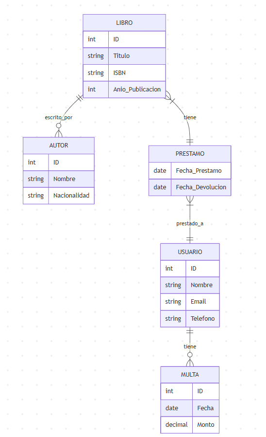
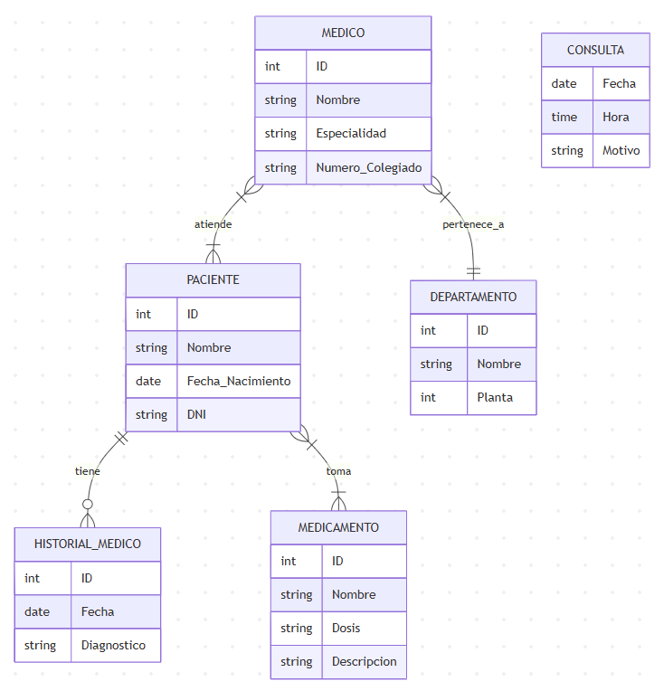

LIBRO (1:N) escrito_por AUTOR
LIBRO (N:M) prestado_a USUARIO
USUARIO (1:N) tiene MULTA
Atributos Libro: ID, Título, ISBN, Año_Publicación
Atributos Autor: ID, Nombre, Nacionalidad
Atributos Usuario: ID, Nombre, Email, Teléfono
Atributos Multa: ID, Fecha, Monto
Atributos Préstamo: Fecha_Préstamo, Fecha_Devolución

MEDICO (N:M) atiende PACIENTE
PACIENTE (1:N) tiene HISTORIAL_MEDICO
MEDICO (N:1) pertenece_a DEPARTAMENTO
PACIENTE (N:M) toma MEDICAMENTO
Atributos Médico: ID, Nombre, Especialidad, Número_Colegiado
Atributos Paciente: ID, Nombre, Fecha_Nacimiento, DNI
Atributos Departamento: ID, Nombre, Planta
Atributos Historial_Médico: ID, Fecha, Diagnóstico
Atributos Medicamento: ID, Nombre, Dosis, Descripción
Atributos Consulta: Fecha, Hora, Motivo
